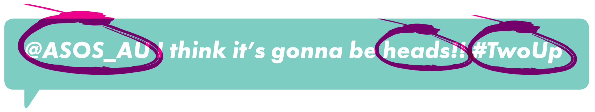
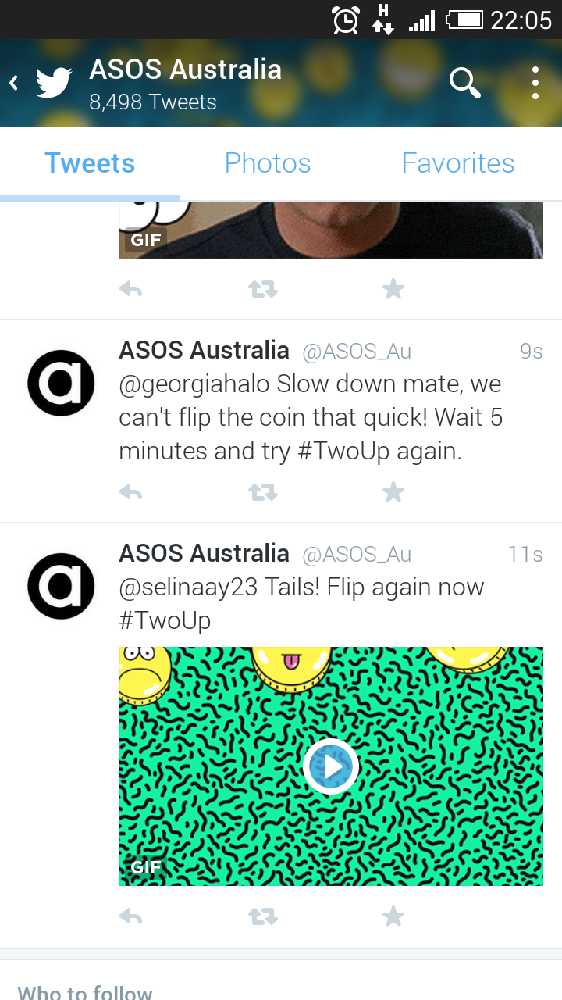

Realtime Twitter game: ASOS Two-Up.
ASOS Australia wanted to run an Anzac Day promotional Twitter game similar to that of the Australian game "Two-Up" (https://en.wikipedia.org/wiki/Two-up). The logic behind the game itself is straightforward - flip two coins and compare the result to the users guess - the key challenges surround running the game on Twitter in realtime.

The aim of the game was to produce a high engagement and sharing rate on the ASOS AU Twitter account for a period of time building up to, and contributing to the promotions held on the day.
The image shows some basic statistical results. As is shown, the game targets were well exceeded. Over the 5 hour period, the game processed over ten thousand Tweets. From the start I had recognised that ASOS has a huge social media following, and the game may be more popular than imagined; because of this I had built the system so that any number of processors could be started to handle increased traffic.
The automatic reply system meant that the ASOS twitter account had to reply to around 10,000 Tweets in the time period. Twitter has API rate limiting that would normally prevent this, however, the ASOS Twitter account is whitelisted for unlimited API usage.
The code is bespoke to the ASOS game requirements, and honestly rather simple once divided into separate systems. However, hopefully this post can inspire others how to create such a system.
The game system broken down into stages:
- Listen for Tweets directed to the ASOS AU Twitter account that contain the hashtag used for the game (#TwoUp).
- Store the Tweet.
- Process Tweets as quickly as possible in FIFO method:
- Filter out Tweets with offensive words and retweets.
- Rate limit users to N entries every 5 minutes.
- Extract the guess from the Tweet; a string containing a single valid guess was accepted (a user could not have #Heads and #Tails in the same Tweet).
- If the user guessed correctly; winners were entered into a second round where they had the potential to win a prize.
- Based on the second round win/loss, winning Tweets were given a prize; the game rules specified that a human was required had to be involved in this process so a realtime dashboard was developed for ASOS to monitor the game and reply to Tweets with prize information.
- Losing tweets receive an automatic reply from a number of pre-written replies with images.
Simply put; receiving, storing, and processing Tweets. The receiving and processing components were written in Python; for no other reason than I felt it was the best adapted language to the requirements and time period I had to produce the system. The storage system was Redis, and the dashboard used to monitor the game was written in PHP and standard frontend technologies.

A couple of example replies are shown in the app screenshot; one person being rate-limited, another losing their try.
For the first stage - receiving Tweets - the Twitter API allows a subscription to be created that allows an API to listen for hashtags for a particular account. Having already worked on a similar process for GOTags, I was familiar with the problems that arise when using a subscription based API; connectivity issues with both their API and mine are potential problems, as too is the possibility that a large volume of data will be received. The receiving endpoint needs to be able to receive a Tweet and offload it into the storage system as quickly as possible.
In-memory databases are favourable when requiring as near real-time systems as possible, as such I used Redis. Data was stored in a list data structure; this allowed me to use POP and PUSH methods on the list; creating a FIFO queue of Tweets waiting to be processed that any of the processor component could access.
A processor process polls the Redis database for Tweets to process. The Tweet is then processed through the game logic, and either passed onto the second stage of the game or immediately replied to with a losing message. These processors had two layers of fault tolerance; on API/database failure the processor would restart itself, if the process completely stopped, Supervisor would restart it.
I started the game with two processors running, but soon realised the volume of Tweets was causing a delay in processing (at a maximum, 30 minutes into the game, the delay was around 45 seconds). Because of this, I threw more server kittens at the game, and started 5 more processors; this reduced the processing to between 1 and 2 seconds. In hind-sight, I should have started large and scaled down if the server was struggling to cope.
The majority of the time spent whilst processing replies was uploading the Tweet images to the Twitter API. It's unfortunate that media images are bespoke to each Tweet, as a faster solution would have been to reuse the same images already hosted on Twitter. However, apart from a few exceptions, the images were mostly under 300kb so the delay was minimal.
The individual components of the system performed well, and no failures were experienced. At the end of the five hour period, the subscription was removed and the processors gracefully stopped.
The game was a huge success and there are rumours flying around that a similar game will be played but on a global basis. The system to manage the amount of Tweets that a global game will attract will be substantial.